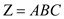
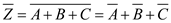
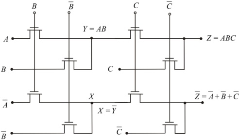
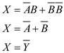
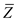
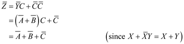
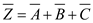

The CPL (complementary pass transistor logic) for the expression  and  as follows:

Figure 1
From Figure 1, the expression at node Y is the logical AND operation of A and B. the output Z is the logical AND operation of Y and the input C.
In Figure 1, the expression at the node X is,

The output is,

Thus, the CPL’s for the expression and is shown in Figure 1.